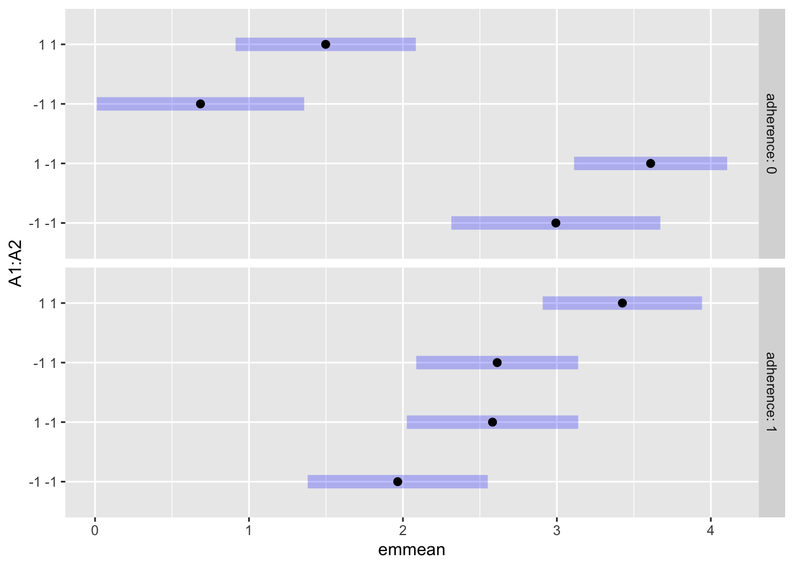
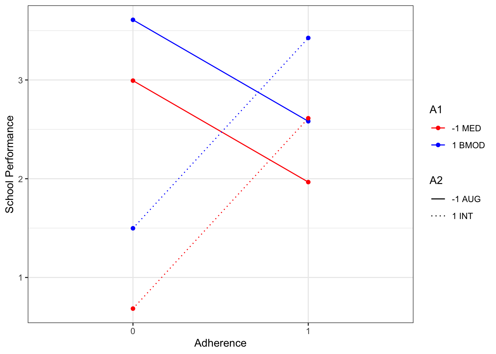

library(CATIE2023)
library(geepack)
library(tidyverse)
library(emmeans)Q-learning Demo
Q-learning Demo using ADHD data
This file provides example R code to analyze *simulated* data that was generated to mimic data arising from the ADHD SMART study (PI: William Pelham). An accompanying handout (“ADHD Handout.pdf”) describes the variables in the data.
Setup
Load data
adhd <- CATIE2023::adhd
# Fill NA with zero
adhd[is.na(adhd)] <- 0
# Grand mean center all covariates
adhd.c <- adhd %>% mutate(across(c(odd, severity, priormed, race, adherence, NRtime), ~ .x - mean(.x, na.rm = TRUE), .names = "{.col}.c"), )
# Filter to non-responders, then center among non-responders
adhd.nr.c <- adhd %>% filter(R == 0) %>%
mutate(across(.cols = c(2:5, NRtime, adherence), ~ .x - mean(.x), .names = "{.col}.c"))Examine moderators of second-stage treatment effect
Remember that Step 1 of Q-learning is to understand how intermediate outcomes can be used to make second-stage decisions about intensifying vs. augmenting. Investigating potential moderators in this way will help us tailor the second-stage intervention for non-responders based on the status of the participants up to the point of non-response. We are only able to investigate non-responders since those were the only individuals who were re-randomized. Because all responders in this study continued on their first-stage intervention, we are unable to assess whether a different tactic would be better for some responders.
We’ll start by fitting a moderated regression model using the data from non-responders. The goal is to discover if we can use the initial treatment a1 and adherence to initial treatment adherence to select a tactic for non-responders, adjusting for baseline covariates. The model is as follows:
\[ \begin{gather} E[Y \mid \mathbf{X}, A_1, adherence, A_2, R = 0] = \beta_0 + \beta_1 odd_{cnr} + \beta_2 severity_{cnr} + \beta_3 priormed_{cnr} + \beta_4 race_{cnr} \\+ \beta_5 A_{1} + \beta_6 adherence + \beta_7 A_2 + \beta_8 (A_2 \times A_1) + \beta_{9} (A_2 \times adherence) \end{gather}\]
Pay particular attention to \(\beta_5\), \(\beta_6\), \(\beta_8\), and \(\beta_{9}\), as these represent the main effects and interactions (with second-stage intervention), respectively, of the two moderators we are interested in for this analysis. Let’s fit the model:
Fit model to the subset of non-responders
# Use the data set that mean centers among non responders, this gives main effects
model2s <- adhd.nr.c %>%geepack::geeglm(Y2 ~ odd.c + severity.c + priormed.c
+ race.c + adherence + A1*A2 +
A2:adherence, id = ID, data = .)
summary(model2s)
Call:
geepack::geeglm(formula = Y2 ~ odd.c + severity.c + priormed.c +
race.c + adherence + A1 * A2 + A2:adherence, data = ., id = ID)
Coefficients:
Estimate Std.err Wald Pr(>|W|)
(Intercept) 2.58822 0.17041 230.691 < 2e-16 ***
odd.c -0.03427 0.23540 0.021 0.884263
severity.c -0.45425 0.10492 18.744 1.50e-05 ***
priormed.c -0.92585 0.26401 12.298 0.000453 ***
race.c 0.68020 0.28537 5.682 0.017145 *
adherence 0.45012 0.21538 4.368 0.036627 *
A1 0.35725 0.12158 8.634 0.003299 **
A2 -1.10481 0.17432 40.169 2.33e-10 ***
A1:A2 0.04936 0.11021 0.201 0.654217
adherence:A2 1.47727 0.22705 42.332 7.70e-11 ***
---
Signif. codes: 0 '***' 0.001 '**' 0.01 '*' 0.05 '.' 0.1 ' ' 1
Correlation structure = independence
Estimated Scale Parameters:
Estimate Std.err
(Intercept) 1.017 0.1496
Number of clusters: 92 Maximum cluster size: 1 Here we find that adherence is a significant moderator of stage 2 treatment $A_2$, but \(A_1\) is not. The sign on \(\beta_9\) is positive, suggesting that those that are adherent would benefit from intensifying treatment (\(A_2 = 1\)). Likewise, the sign of \(\beta_7\) is negative suggesting those that are non-adherent would benefit from Augmenting (\(A_2 = -1\))
Interaction plot of moderators of stage 2
We will use a very powerful package called emmeans to estimate the marginal means given a set of factors
#grid <- emmeans::ref_grid(model2s, cov.keep = c("A1","A2", "adherence"))
em2 <- emmeans::emmeans(model2s, ~ A1 + A2 | adherence) # do we need weights=?
em2adherence = 0:
A1 A2 emmean SE df asymp.LCL asymp.UCL
-1 -1 2.993 0.346 Inf 2.3144 3.67
1 -1 3.609 0.254 Inf 3.1117 4.11
-1 1 0.685 0.344 Inf 0.0114 1.36
1 1 1.498 0.299 Inf 0.9127 2.08
adherence = 1:
A1 A2 emmean SE df asymp.LCL asymp.UCL
-1 -1 1.966 0.298 Inf 1.3812 2.55
1 -1 2.582 0.284 Inf 2.0252 3.14
-1 1 2.612 0.268 Inf 2.0863 3.14
1 1 3.426 0.264 Inf 2.9081 3.94
Results are averaged over the levels of: odd.c, priormed.c, race.c
Covariance estimate used: vbeta
Confidence level used: 0.95 plot(em2)
ep2 <- emmeans::emmip(em2, A1 + A2 ~ adherence, style = "factor")
ep2$data %>% mutate(across(1:3, as.factor)) %>%
ggplot(aes(xvar, yvar, color = A1, linetype = A2, group = tvar)) +
geom_line() +
geom_point() +
scale_color_manual("A1", values = c("-1" = "red", "1" = "blue"),
labels = c("-1" = "-1 MED", "1" = "1 BMOD")) +
scale_linetype_manual("A2", values = c("-1" = 1,"1" = 3),
labels = c("-1" = "-1 AUG", "1" = "1 INT")) +
xlab("Adherence") +
ylab("School Performance") +
theme_bw()